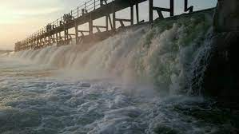

Khammam Fort |

Palair Lake |
Kinnerasani Project |
Wyra Lake |
Jammalapuram Temple |
Khammam Fort is a fort in the city of Khammam, Telangana, India constructed by [[Lakshma Reddy, Ranga Reddy and Velama Reddy]. It served as an impregnable citadel during various regimes of different dynasties, including the Musunuri Nayaks, Qutb Shahi’s and Asaf Jahis. The fort was situated in a very vast area in the heart of the City of Khammam. It was notified as a protected monument by the Archaeology Department several decades ago. Despite decades of neglect, the historical edifice, which once flourished with regal opulence, presents its alluring charm due to its architectural splendor.
Palair Reservoir is located at the Palair village in Kusumanchi mandal of the district and is about 30 kilometers away from the district headquarters of Khammam.[2] The lake is a balancing reservoir for the Lal Bahadur Canal, a left bank canal of the Nagarjuna Sagar project. Covering an area of 1,748 hectares, the lake has a storage capacity of 2.5 TMC of water.[2] The lake is an important tourist attraction in the district and water based adventure sports and recreational facilities have been provided at the lake in recent years to develop it as a tourist site.[3][4] Electrical power is also generated using Palair reservoir water.
Kinnerasani is an important tributary of Godavari flowing through the Warangal and Bhadradri districts of Telangana and Eluru district of Andhra Pradesh.Kinnersani Dam built on the river near Paloncha In the Khammam District, a dam known as the Kinnerasani Dam is built on this river. The back waters of the dam are surrounded by verdant hills and come to be protected under the precincts of the Kinnerasani Wildlife Sanctuary. The river drains on the right bank of Godavari in Telangana and forms common boundary between Andhra Pradesh and Telangana states before its confluence with main Godavari river.
The Wyra River is one of the tributaries of Munneru River, which is itself a major tributary of Krishna river.[1] It originates at Wyra Reservoir near Wyra village, which was named after the reservoir.
Sri Venkateshwara Swamy Temple located in Jamalapuram, near to Errupalem in Khammam district of Telangana,India. The presiding deity in this temple is Lord Balaji and is said to be a swayambhu Lord, who self-manifested in this place. The legend has it that in ancient days Jabali Maharshi worshipped and did penance here at a place called Suchi Gutta and was said to have been blessed by Lord Venkateshwara. The temple here seems to have been in existence since considerable antiquity. It was renovated by Sri Krishnadevaraya, the emperor of Vijayanagara Empire. It is also known as Telangana Chinna Tirupathi. The temple has sub-shrines for Padmavathi Ammavaru, Sri Alamelu Ammavaru, Lord Shiva, Lord Ganesh, Lord Ayyappa, and Lord Hanuman.